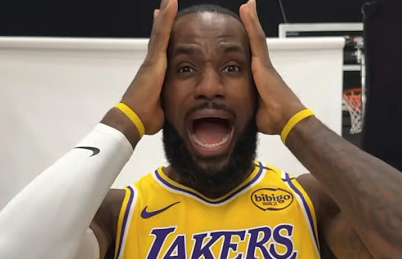

The LeButterfly Effect: How LeBron Changed the Makeup of the League
Watching the playoffs this year has been very exciting, with the close games and longer series, and this has just been in the first round. I’ve been enjoying watching the Lakers in particular, only because this may be…